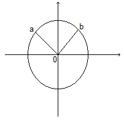

מילי שמידט
מילי שמידט
שרטוטים והוכחות
30/04/2024
נתקלתי בהסבר יפה שגרם לי לחשוב קצת. יש לא מעט דברים כאלה במתמטיקה, והחלטתי להביא את הנושא לכאן. למען הפישוט ולטובת מי שלא רוצה להסתבך במתמטיקה, החלפתי את הדוגמה המקורית בדוגמה פשוטה יותר. כעת, לפנינו מעגל על מערכת הצירים, שמרכזו בנקודה 0. נרצה לטעון ששתי הנקודות המסומנות, a ו-b, נמצאות באותו מרחק ממרכז המעגל, כלומר באותו מרחק מאפס. אנחנו לא יודעים את ערכן של הנקודות האלה, אבל אנחנו יודעים שאם נצייר קו ישר, הלוא הוא הרדיוס, ממרכז המעגל לכל נקודה כזו, נגלה שבאמת שתי הנקודות נמצאות באותו מרחק ממרכז המעגל. קל לראות את זה, אפילו בלי מדידה.
השאלה היא, האם זו הוכחה מתמטית? התשובה היא, כמובן, לא.
במתמטיקה, תיאור גאומטרי לא מהווה הוכחה. תיאור גאומטרי הוא לא מדויק, הוא לא בדיוק, וההתרשמות ממנו טובה רק לאינטואיציה.
מתמטיקה חייבת להסתמך על דיוק שהוא מעבר ליכולת השרטוט האנושית, זהו דיוק מופשט שאי אפשר לקלוט בחושים אלא רק בשכל. אם כן כשמחפשים דיוק, כמו במקרה של הוכחה מתמטית, אי אפשר להסתמך על החושים כמו גם על העולם האמפירי, שהרי גם הצורות בעולם החומר הן לא מדויקות לחלוטין, הקווים לא ישרים לגמרי וכן הלאה.
מה גם, שרטוט הוא לא כללי מספיק. הוא עושה מעין קונקרטיזציה לבעיה. a ו-b בשרטוט שלנו הם אמנם כלליים ואין להם ערכים מוחלטים, כמו 3 או 7, אבל גם נמצאים ברביע ספציפי של מערכת הצירים. כלומר, יש רמות של הפשטה וגם שרטוט של a, b או "משתנים" נוספים מאלץ קביעה של המיקום שלהם במישור, למעשה מחייב הוספת תכונה כלשהי עבור a ו-b, מיקום במישור, שלא קיימת ברמת ההפשטה הגבוהה ביותר. גם זה פוגם בכלליות ההוכחה.
נלמד מכך שאין בעולם החומר שום דבר שיכול לייצג בצורה מדויקת לחלוטין אובייקטים מתמטיים, אפילו לא שרטוט. במילים אחרות, האובייקטים המתמטיים סגורים להם בעולם נפרד, בין אם הוא רק בתודעה האנושית ובין אם הוא באמת מעין מישור קיום נבדל ממנה. בזה לא נעסוק כאן.
התובנה הזו, שהאובייקטים המתמטיים מנותקים לחלוטין מהעולם החומרי, הייתה יכולה להיות ברורה יותר אילולא העובדה שהנתק הזה הוא בכל זאת לא "לחלוטין", ולמעשה הוא לא נתק מוחלט בכלל. כבר אמר פעם אלברט איינשטיין, "איך זה שהמתמטיקה, שמתקיימת רק במוח האדם, מתאימה כל כך לעולם שמתקיים מחוצה לו?"
וזה נכון. המתמטיקה מאפשרת לבנות גשרים, להטיס טילים ולייצר משחקי מחשב, למרות היותה מתקיימת בנפרד מהעולם שבו קיימים גשרים, טילים ומחשבים. אפילו לתחומים אבסטרקטיים מאוד של המתמטיקה, שבעבר חשבו שאין להם שום שימוש למעט שעשוע אינטלקטואלי, כבר נמצאו שימושים בעולם החומר. אם כן, המתמטיקה היא לא רק איזה מישור קיום מופשט, אלא היא גם צינור בין אותו מישור מופשט לבין עולם החומר. למעשה, חוקי המתמטיקה מאפשרים במידה רבה את פעילותו של עולם החומר.
ובכל זאת, שום דבר בעולם החומר לא יכול להוות הוכחה לנכונות המתמטיקה. ולכן שאלת ההתאמה של המתמטיקה המופשטת לעולם החומר הקונקרטי, היא בעיניי אחת השאלות הגדולות ביותר של המתמטיקה ועל המתמטיקה. ואני חושב שפתרון לה, אפילו חלקי, יכול לשפוך אור על בעיות רבות אחרות שלכאורה הן מחוץ לתחומה בכלל.
קטגוריות: